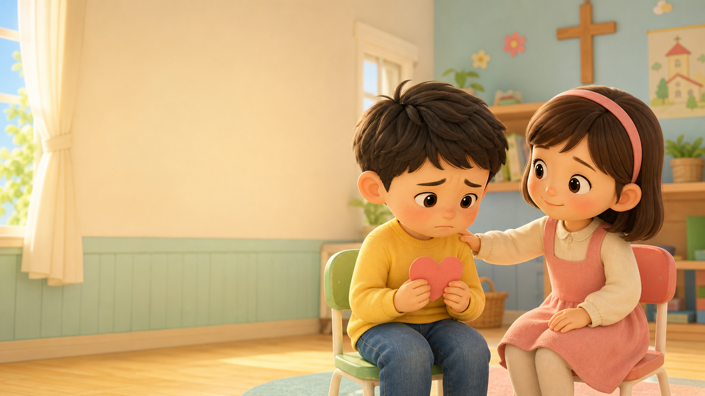

들어도 금방 잊어버립니다
성경 이야기를 듣는 것만으로는 아이들의 생활과 마음에 오래 남기 어렵습니다.
POB 성경클럽은 주일학교 아이들이 말씀을 지루하게 듣기만 하지 않도록, 성경 본문을 중심으로 퀴즈, 체조, 게임, 몸놀이, 묵상을 연결합니다.
부모와 교회 담당자가 함께 느끼는 고민에서 POB 성경클럽은 시작합니다.
성경 이야기를 듣는 것만으로는 아이들의 생활과 마음에 오래 남기 어렵습니다.
주일에 들은 말씀이 가정의 묵상과 대화로 이어질 장치가 필요합니다.
본문, PPT, 퀴즈, 게임, 암송까지 매주 새로 만드는 부담이 큽니다.
대답하고 누르고 뛰고 팀으로 활동할 때 말씀을 자기 경험으로 받아들입니다.
사람이 적어도 계속 열 수 있는 안정적인 흐름이 필요합니다.
신앙이 없는 가정도 부담 없이 들어올 수 있는 활동형 시간이 필요합니다.

읽기, 듣기, 질문, 퀴즈, 활동, 암송, 묵상까지 한 흐름으로 묶습니다.
성경을 읽고, 움직이고, 풀고, 기억하는 흐름으로 예배와 활동을 자연스럽게 잇습니다.
| 순서 | 내용 | 시간 |
|---|---|---|
| 오프닝 체조 | 몸을 깨우고 집중을 준비합니다 | 10-15분 |
| 찬양 | 영상 또는 현장 찬양으로 마음을 엽니다 | 5-10분 |
| 본문 읽기 | 오늘의 성경 본문을 함께 읽습니다 | 5분 |
| 말씀 스토리 | 본문을 아이 눈높이로 설명합니다 | 10분 |
| 성경 퀴즈 | 본문 내용을 질문과 선택으로 확인합니다 | 10분 |
| 말씀 게임 | 태블릿과 시각 자료로 말씀을 익힙니다 | 10분 |
| 몸놀이 | 주제와 연결된 팀 활동으로 움직입니다 | 10-15분 |
| 암송/마무리 | 말씀을 기억하고 기도로 마칩니다 | 5분 |
재미있는 활동을 붙이는 것이 아니라, 말씀을 중심에 두고 활동이 따라오게 합니다.
주제 활동보다 먼저 본문을 읽고, 질문하고, 확인합니다.
손을 들고, 누르고, 선택하고, 팀으로 움직입니다.
게임은 놀이로 끝나지 않고 오늘의 말씀을 기억하게 합니다.
가정에서 다시 떠올릴 수 있는 말씀 흐름을 만듭니다.
콘텐츠와 흐름을 제공해 교사 부담을 줄입니다.
성경 퀴즈, 캠프, 교사훈련으로 이어질 수 있습니다.
말씀 중심은 분명하게, 입구는 부담 없게 열어둡니다.
POB 게임즈는 교회 밖 아이들도 부담 없이 참여할 수 있는 90분 활동 프로그램입니다. 체조, 게임, 팀 활동, 성경 스토리를 결합해 아이들이 스마트폰 없이 뛰고 웃고 배우는 시간을 만듭니다.
말씀 설명, 퀴즈, 영상, 점수 화면이 이어져 아이들이 화면 앞에서 수동적으로 머물지 않고 직접 참여합니다.
질문을 통해 아이들이 성경 이야기의 핵심을 스스로 찾습니다.
본문 속 사건을 아이 눈높이에 맞춰 영상으로 보여줍니다.
팀 점수와 활동으로 조용한 아이들도 자연스럽게 들어옵니다.
POB 성경클럽은 한 교회의 행사로 끝나지 않고, 교사훈련과 연합 활동으로 확장될 수 있습니다.
각 교회 상황에 맞게 주일 또는 토요 프로그램으로 운영합니다.
평신도 교사도 주일학교를 맡을 수 있도록 훈련합니다.
같은 본문을 여러 교회가 함께 활용하고 발전시킵니다.
연합 성경 퀴즈대회, 캠프, 방학 프로그램으로 확장합니다.